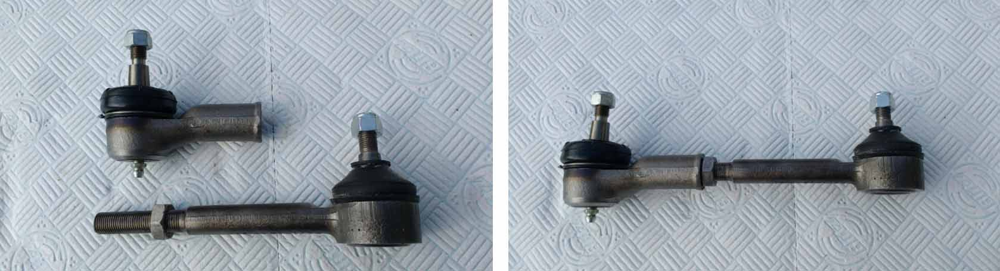
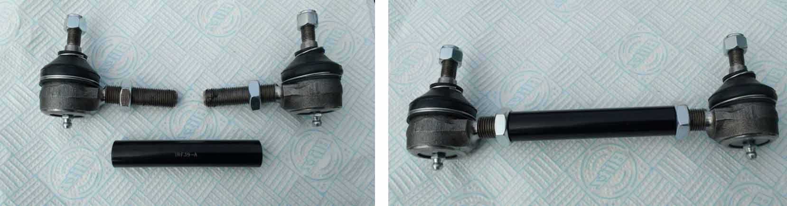

Alternative Outer Track Rods
Due to short supply and supplier issues
· 22nd August 2018
Having sold the last outer track rod I had in stock I contacted my usual supplier for some more. Unfortunately he didn’t have any and was not optimistic about being to get any more. He did, however, say that Austin A40 Farina Mk 2 adjustable side rods had the right taper and would do the job so I ordered some to have a look. They duly arrived and consist of a male and female track rod which can be screwed together to give the required 7½″ between centres and locked with a lock nut.
Unfortunately, it seems that these are also in short supply. My supplier also informed me that Triumph Herald, GT6 and TRs are also the right taper. The TR2/3 has a pair of male track rod ends with LH and RH threads with a tie rod (threaded connecting tube) and these are available so I ordered a set to check that they could be set to the right distance between centres. They can.
I will aim to stock one or both of these alternatives for our outer track rod in future.
If you decide to go down the Herald/GT6 route they are female track rod ends so you will also need a threaded connecting rod and lock nuts.
Paul Burgess (1200)
TMC Spares Coordinator